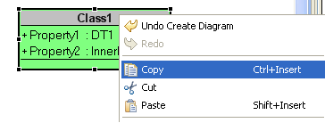
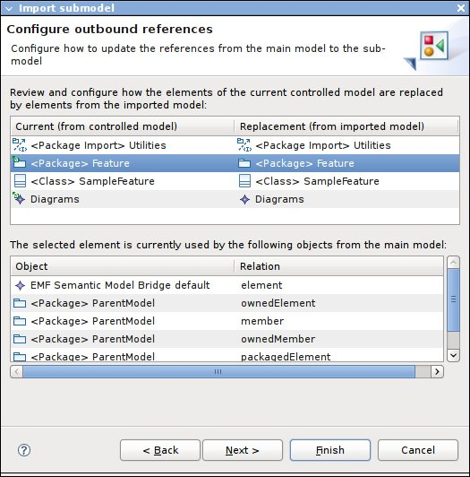
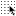
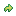

On this page you will find the main functionalities of the Modeling Framework.
Graphical Editor Configuration :
- How to create an editor configuration
- How to create a diagram configuration
- How to create a Properties view configuration
- How to create an outline configuration
Graphical Editor Generation :
| Models edition | |
| Model and Diagram files storage | The creation of a new diagram in Topcased result in the creation of two files. The first file has the *.model extension contains informations about the model, whereas the second file with the *.modeldi extension contains graphical information about diagrams (position, size, colors,...). |
| Activation of the "Topcased Modeling" Perspective | Modeling with Topcased is easier by selecting the "Topcased Modeling" perspective : a perspective is a particular configuration of Eclipse environment that consists of customized views, shortcuts and popup menus. To activate the "Topcased Modeling perspective", select "Window -> Open Perspective -> Other .." and select the "Topcased Modeling" perspective : |
| Creation of a Topcased Project |
<< New in 1.0.0M2 >>
A new project creation wizard is available. This will create a simple Project with a dedicated nature : the generated project only contains a single "Models" folder that should be usually used to contains the model files related with the project. The project structure will evolve in the future depending on the user needs and feedbacks. |
| The Topcased Navigator |
<< New in 1.0.0M2 >>
The Topcased Navigator may be used in place of the default Navigator in the Topcased Perspective.
The view has been improved with a few filters on the Resources to show or hide in the navigator. By default, only the Topcased projects (with a Topcased nature) are visible :
Content filters are also available. They are used to show or hide the contents of a given Resource in the navigator. Thus you can explore the contents of a model file or show
all the diagrams that are available for a given model.
|
| Creation of a new Diagram |
Each graphical editor is associated with a wizard whose goal is to simplify user tasks. The creation is so achieved in a few steps. To start the wizard, select the project
where you want to create your model, "Right Click > New > Other..." and then select the corresponding kind of diagram : "Topcased > Topcased Diagrams >
XXXDiagram"
Remark : if you have successfully switched to the "Topcased modeling" perspective, there is a shortcut directly accessible from the popup menu.  Once you have selected the expected diagram, the wizard is opened :
You will have to fill the following informations :
Once you have selected the expected diagram, the wizard is opened :
You will have to fill the following informations :
When you have correctly filled all the informations, click on the "Finish" button to open the editor with your empty diagram. |
| Creation of a new Diagram from an existing model |
Each graphical editor is associated with a wizard whose goal is to simplify user tasks. The creation is so achieved in a few steps. To start the wizard, select the model
file that should be associated with the diagram you want to create, "Right Click > New > Other ..." and then select the corresponding kind of diagram depending
on the model file you have choosen : "Topcased > Topcased Diagrams > XXXDiagram".
Once you have selected the expected diagram, the wizard is opened : You will have to fill the following informations :
When you have correctly filled all the informations, click on the "Finish" button to open the editor : as you can see the editor is empty. However, if you look at the "Outline" and more precisely the area that contains the model, you will discover that all the model object are present : so you have just to drag and drop the objects into appropriate diagrams and continue modeling. |
| Export formats | Different exporting formats are available. The active diagram can be exported as an image to your file sytem. On the editor, "Right Click > Export to file" and then in the popup window, select the destination folder and the format among BMP and JPG. << New in 0.10.0 >> Three new formats are available : SVG, PNG and GIF. |
| Rename a Model |
<< Update in 2.0.0 >>
The rename of a model uses the standard refactoring mecanism of Eclipse and extends it to add its specific tasks. This specific tasks are to rename a diagram/model file(s), and modifiy all the files that are referencing them. A new dialog lets the user choose the refactoring range : by default, the renaming of the file only update the files in the same project, but the workspace may be included in the references search (the process will be longer in this case). |
| Use qualified name in the selection dialog |
<< New in 2.0.0 >>
When you need to reference a domain element in your model, you often select it through the custom chooseDialog availaible from the Properties View. 
However the proposed list could lead up to confusion sometimes. An option (available only in some significant cases) can be used to show qualified name instead. |
| Copy/Cut/Paste in the editor
|
<< New in 2.1.0 >>
You can Copy/Cut/Paste elements between two distincts diagrams. The Copy/Cut is done on the underlying domain element, but not on the graphical one. Copy/Cut is available when only one element is selected in the diagram and that this element is associated with a domain element. In fact, all the sub-hierarchy (element itself and all its children) of the selected element is copied into a "Clipboard". This "Clipboard" is shared between all the Topcased editors. When you Paste an element from the "Clipboard" contents, a dialog may (or not) be prompted : that depends whether the "copied" set of elements could be independantly extracted ot not. When the dialog appeas, it means that some references to "external" elements are present : by default, all those references will be removed in the newly created elements. This is mainly to avoid unwanted dependencies to be automatically added. In the case of Copy/Paste action is done within the same diagram, references should be kept : just unselect all. After the Paste action is performed, new domain elements are created and the diagram is automatically populated using default Importer mechanism (available when using DND between the outline and the diagram). It means that graphical properties (font, colors, size, ...) are not kept between the two copies. |
| Duplicating part of a model
|
<< New in 2.1.0 >>
A new action "Duplicate subtree" is available in the outline, to make a deep copy of part of a model, including the associated diagrams. The copy is placed alongside the original element (the containing model must not be read-only). In addition, when applied on UML models the relevant stereotypes are also copied, and the name of the root element is changed to "Copy of OLDNAME" to distinguish it from the original. |
| Scripting support |
<< New in 2.1.0 >>
There is now support to write user scripts to automate some tasks in Topcased (only if you have installed the Experimental features). The scripts are written in the JavaScript language and placed directly in the workspace: there is no need to deploy a new plugin or even to restart Eclipse. The scripts have access to the current editor's selection, and can navigate in models, create/modify existing elements and save the results. They can also interact with the user to ask him for parameters and display results. Sample scripts are available for SAM, SysML and UML. To get them, do "File > New > Other", and in the new "Topcased > Topcased Scripting" category, select one of the examples projects (for example "Example UML Scripts"). This creates a new Topcased project in the workspace, with example scripts pre-installed. The scripts can be invoked from Eclipse's top-level "Scripts" menu, in the "Topcased" sub-menu. More details about this feature, including how to use scripts, how to write your own and how to extends the features they have access to can be found in a separate documentation. |
| Team Work Management | |
| Control/Uncontrol |
<< New in 0.11.0 >>
These actions are mainly used to split/merge a model into several models. This functionality is mainly used to share a same model between different users. You can "Control" (or split) a model from the Outline View. Select the element you want to extract in a new file, "Right Click > Control" : Then, you have to choose a file where the subModel should be stored (Do not forget to indicate the corresponding file extension) : At this point, when you save the model, the new controlled file should appear in the Package Explorer view. An associated diagrams file is also created : it will contains all the diagrams contained in the hierarchy of the controlled element, or none. You can then edit that diagrams, all changes are made in that file (the original file only keep a reference to that controlled file). Later, you can choose to "Uncontrol" (or merge) these two models. In the original model file, select the controlled element (it should be decorated with a special icon in the Outline View), and then "Right Click > Uncontrol" : A dialog opens to ask if you want to delete the controlled files or keep them. If you decide to keep them, they will not have been modified by the Uncontrol action. Otherwise they are removed from the disk. At the end of the action, the contents of the controlled files (model and diagrams) should be merged into that model. |
| Export/Import |
<< New in 2.0.0 >>
These new actions extend the Control/Uncontrol actions to enable collaboration: controlling a sub-model allows to physically split it across multiple files, but the controlled model still depends on its parent. The new "Export" action creates an autonomous version of the sub-model, which can be sent to another user (e.g. a sub-contractor). He can then view and edit it without access to the whole original model. The "Import" action can later be used to integrate changes made by the user back into the original model. WARNING: When exporting part of an UML model, if elements of the sub-model to export have stereotypes applied to them, the corresponding Profiles must be applied directly on the package being exported. It is not enough for the profile to be applied on a parent element which will not be part of the exported model. If the profile is initially only applied to such a parent element, you must manually apply it also in the package to export before executing the export operation. Once a model has been controlled, a new action "Export" is available: from the Outline View, select the controlled element you want to export and "Right Click > Export": A wizard opens. The first page allows you to select the name of the sub-model (without a file extension), and the target directory where it will be saved: In order to make the exported sub-model autonomous (i.e. usable without the complete original model), the export action includes copies of all its dependencies into a new, companion model named the cache. The second page of the export wizard shows you a preview of what will be included in this cache, and gives you some control over it: 
There are three categories of elements in the cache:
Once you are satisfied with the contents of the cache, you can click Finish to actually perform the export operation, and then save the model. The export process will not modify the original models (including the controlled sub-model), but will create 5 new files: In the example above, we exported the Feature package (which was initially controlled) from the ParentModel UML model. The new files created are:
The *.part.* and *.cache.* files are self-contained: they reference each other, but are not connected to the original models in any way. They can be sent together to another user, who will be able to open the model and modify it. They can be safely removed from the parent model's workspace. Two important things to note:
Once the exported version of a sub-model has been modified, it is possible to re-integrate these changes into the main model using the "Import" action. It is available on controlled sub-models which are marked as exported (through their associated .properties file). The action opens a wizard: The first wizard page, shown above, allows you to select the sub-model to import (the Feature.part.uml file in our example). The next two pages of the wizard allow to preview and configure the import process: because the main model and the exported model may have changed since the export, cross references between them may need to be tweaked so they can be re-integrated together. The first of these pages treats references from the main model to the controlled model, which must be updated to point to the new sub-model being imported. The second page treats references from the model being imported to its cache, which must be updated to point back to the new version of the parent model. Both pages are organized in the same way:
Once you are satisfied with the import configuration, you can click Finish to complete the process. The controlled model will be replaced by the version from the *.part.* files, and the connections between the main model and this new sub-model updated according to the configuration specified in the wizard. |
| Concurrent access |
<< New in 2.0.0 >>
By default, you can't open a single resource (with write access) by two diagram editors to avoid problems of synchronization between editors. The second editor will open but with an error message indicating the problem.
|
| Model Archive
|
<< New in 2.1.0 >>
It is possible to manage domain model and its diagram into a single archive model. A set of actions are available to manage archive models : depending on the current selection, actions are visible or not. Here is a quick overview of the available actions, that can be reached from the contextual menu ("right click > Model Archive") :
Create xxx Archive : create an archive (JAR) from a set of files
Restore From xxx Archive : extract the files contained within an archive (JAR) and remove this archive model
Add To Archive ...
Extract From Archive
|
| Graphical Properties | |
| Direct Edit | When a label is associated with a graphical element, in general you can directly edit it from the editing Window. Note that you can use the shortcut "F2" when an element is selected to enter in the direct Edit mode. |
| Resize element |
Depending on the element configuration, an element may be resizable or not. When it is resizable it can be restricted so that only the width, the heigth or both dimensions could be resized. To resize an element,
select it first and depending on the small squares that are drawn around the selection bounds, you can try to extend its initial size.
Note that when you resize an element that contains children elements attached to its border, these children elements remain in place so that rectilinear connections did not change. Here is an example to illustate this : |
| Grid Support  |
<< New in 0.10.0 >>
When activated, graphical elements are automatically aligned on the grid when they are created, moved or resized. When snapping a rectangle, the edges of the rectangle will snap along gridlines. |
| Snap to Geometry support | When activated, graphical elements can be snapped to existing elements. When snapping a rectangle, the edges of the rectangle will snap to edges of other rectangles corresponding to the existing elements. Similarly, the centers and middles of rectangles will snap to each other. |
| Alignment for graphical elements
|
Alignment can be performed whenever two or more graphical elements are selected. They can be aligned between them or resized to match the size of the primary selection.
Note : The primary selection is indicated by black selection handles, non-primary selection is indicated by white handles with a black outline. |
| AutoResize | Graphical elements can be resized automatically to fit their minimal size. This is used in particular during the Drag'n'Drop of an object from the Outline. |
| Show/Hide connection Labels |
<< New in 1.0.0M2 >>
You can choose to show or hide the Labels associated with a Connection. In the "Graphics" tab of the Properties View, when a Connection is selected, there is two lists that show you the Labels that are linked with the connection : the Left list contains the labels that are displayed in the diagram, and the left list, those which are hidden. |
| Autowrap long names |
<< New in 2.0.0 >>
In some cases, it is more readable when a long label is displayed on several lines. This beahvior has been applied on graphical elements for which it makes sense. |
| Diagram navigation | |
| Initialization of diagram contents |
<< New in 0.10.0 >>
When a diagram is about to be created, it can be initialized with the existing model objects. This feature is available from the creation wizard (when you create a new diagram from an existing model file) and during the model edition, when you create a diagram into an existing model object that could be associated with a diagram. |
| Navigation to the parent or last active diagram
|
Using the toolbar menu actions : you can navigate to the previous diagram or the next diagram. You can also navigate to the parent diagram : the parent diagram is a
diagram that is associated with the first model object in the parent hierarchy of the current diagram.
From the Editing Window : double click on a graphical element that is decorated with the icon  to display the associated diagram. From the Outline : double click on a diagram in the outline to show its content. |
| Diagram creation |
From the Editing Window : double click on a graphical element. If the element can be associated with a diagram, this will create a new one. When more than one diagram can be associated with the element,
a popup appears and you can choose the type of diagram to create.
From the Outline : select a valid model object, "Right Click > Add Diagram > XXX Diagram". |
| Connections | |
| Connection creation | Creation of a "connection" (a.k.a. link, flow) requires that the user click twice, once on the source, and again on the target. This allows the user to scroll the diagram between clicks. |
| Routers | Three routers are available :
|
| Move labels |
The labels that are associated with a connection are completely movable. Thus you can arrange them to get a more readable diagram and avoid labels to be displayed above a connection.

|
| Model validation | |
| Display validation errors |
<< New in 0.9.0 >>
The validation errors are displayed in the diagrams. |
| Documentation View | |
| Documentation View | You can add additional informations on a graphical element in the Documentation View. Select the element in the diagram, and then in the Documentation View, choose the Comments tab. Then, you can type a multiLine text. |
| Link external resources | You can link Resources with a graphical element. Select the element in the diagram, and then in the Documentation View, choose the Resources tab. When you add a new Resource, a dialog appear : You have to choose the Resource type you want to link with your element, and then an appropriate selection Dialog is shown. When you have choosen a Resource you can then directly open it with the default editor by double clicking on it in the Documentation View. For example here is an example where you can link another diagram : |
| Rich Text Edition |
<< New in 2.1.0 >>
You have the possibility to choose between two modes while editing your documentation :
You can switch between the two editors using the "Use HTML Editor" button. If you click on the "Edit" button, the dialog is prompted : you can change the documentation contents and change text properties using the toolbar associated with a the rich text editor. Documentation contents is only saved when "OK" is pressed. |
| Rich Text hyperlinks
|
<< New in 2.6.0 >>
You have the possibility to add hyperlinks to an existing Diagram or any element from your semantic model while editing your documentation through the rich text editor.
|
| Text color and highlight
|
<< New in 2.6.0 >>
You have the possibility to change the text color or to highlight some text when editing your documentation through the rich text editor.
First, select the text you want to modify, then click on the corresponding icon in the toolbar to change either the text foreground or background color. A dialog window will then let you select the corresponding color, just click on "OK" to validate and see your changes applied immediately.
|
| Carriage Return behavior |
<< Fixed in 2.6.0 >>
In previous versions, there were some troubles when editing multiline text in the rich text editor. Now we have fixed these issues, and the following picture explain the current behavior : |
| Edit table structure
|
<< Added in 2.7.0 and 3.1.0 >>
Due to some specificities on the underlying Browser which is used to render your documentation in the rich text editor, there are different way to modify the structure of a table that has been presviously created. It mainly depends on your operating system and the Browser you are using by default :
|
| Outline View | |
| Display mode
|
You can change the display mode of the outline :
|
| Filters
|
You can filter elements that are displayed in the tree view of the outline. Select the "Filters..." action from the 'Menu' icon at the top right of this view.
Three filters are defined :
|
| Object sorting | You can sort the model objects that are at the same hierarchical level. By default they are ordered following their creation date, but you can arrange them in alphabetical order. |
| Palette tools | |
| Marquee tools |
There are three different tools dedicated to the selection of the elements in the diagram :
|
| Palette presentation |
The Palette can be displayed with several presentations :
|
| Model Refactoring | |
| Reconnecting Links | User is allowed to reconnect links. All necessary model changes will be performed on the back stage. All that one have to do is to select the link on the diagram, and grab one extremity to reconnect. Drag the link end and drop it on the new target. While dragging the link end over an incorrect target, the mouse cursor will display a cross . This means the link will return to its initial state before dragging the link. |
| Placing existing object in other containers | It is also possible to change an exisiting element of container. A container can be a Package in a Class Diagram, a Region un a StateMachine Diagram, etc. User is able select a graph node and with a simple Drag and Drop, try to place it over different containers. When the target object cannot host the selection, the mouse cursor will display a cross . On the other hand, when changement is allowed, the cursor will remain normal. Note that diagrams will perfom changements when the mouse cursor is over the new container. This means user does not need to drag the whole figure inside the new container to change its parent. |
| Changing properties of Graph Node | Some elemens such as Classes in a Class diagram may have lists of properties or operations. It is also available to change (one by one or several at a time) these properties. You have to select the concerned objects and drag and drop them into the new node. As well as the actions explained above, the mouse cursor will display a cross when the you are dragging over a wrong place. |
| Note | This changes can be done graphically. Dragging and Dropping object from the Outline will be neither executed or modified. |
| Tasks View | |
| Todo Note in Topcased modeler | Users can add on a Topcased modeler a Todo Note that will add an entry in the Tasks View. You have to create a note on the diagram and start its content by the keyword "Todo" (non case-sensitive). |
| Todo Note in Tasks view | Creating a note on a Topcased diagram starting by the keyword "Todo" add an entry in the Tasks View. Note that if the user double-click on the task, it opens the linked topcased diagram (if closed) and places focus on the note that created this task entry. |
| Todo Note Activation |
Creating a Topcased project will automatically activate todo note behaviour. However, this behaviour need to be activated for a project older than todo note implementation in Topcased. In that case, right-click on the Topcased project, select Topcased / Other / Todo Note Activation. |
 Note that if you can directly open a Diagram in the graphical editor by double clicking on it.
Note that if you can directly open a Diagram in the graphical editor by double clicking on it.